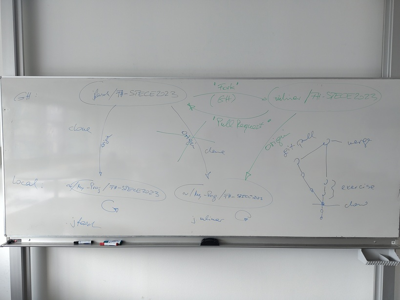

2025-05-12 (3 VO): C++ “Door” Exercise Recap, Some Git¶
C++ Material¶
Some Git¶
Add/Commit¶
View changes
Current working directory somewhere inside the tree,
$ git status ...
git addchanges: stage for next commit$ git add file.h file.cpp ...
Review repo situation
$ git status ...
git commitwhat you stagedEither non-interactive (giving the commit message as a commandline parameter)
$ git commit -m 'frobozz the foobar'
Or letting git pop up your favorite
$EDITOR$ git commit
Access Github Over SSH Not HTTPS¶
This is simpler. HTTPS requires two factor auth and jumping through hoops.
Deploy SSH public on GH ⟶ homework. On Github, You -> Settings -> SSH and GPG Keys. Paste your public key.
Change origin, And Push¶

origin is the default for git pull and git push. We want
that these operation always go to something where we have write
access - our own “fork”.
On Github (https://github.com/jfasch/FH-STECE2023), fork the project into something where you have write access; say, https://github.com/you/FH-STECE2023.git. Press the “Fork” button and follow the instructions.
Change
originof your clone to be your fork$ git remote set-url origin git@github.com:you/FH-STECE2023.git
Note the SSH URL, starting with
git@github.com:.Pull changes that you don’t have. Reason: between the time you cloned your repo (remember, from https://github.com/jfasch/FH-STECE2023), and the time you created the fork, some commits have been pushed to https://github.com/jfasch/FH-STECE2023.
$ git pull ... an editor will pop up. accept the prefilled "this is a merge commit" message ...
Push your repo; this will now go into your new repo git@github.com:you/FH-STECE2023.git
$ git push
Homework¶
Local C++ Transformation¶
Complete the C++ transformation according to the example in lib/push-button.h and lib/push-button.cpp
See door sketch in Door Exercise. For all the components in your
exercise/firstname.lastname/libdirectory, change its implementation from Cstructto C++class.PushButtonLightBarrierMotorDoor(the C struct has pointer members, and this does not change in the C++ class)
Make sure the tests still run
Make clean commits in your local repo that you cloned from https://github.com/jfasch/FH-STECE2023.git the other day
Fork on Github, And Change Your origin¶
Following the procedure outlined in Change origin, And Push,
Create a fork of our project
In your clone from earlier days, change
originto that fork.Push your repo to the new
origin
Submission: Pull Request¶
To submit, send me a pull request.